Projetos
✊ Jokempô

Jogo de pedra, papel e tesoura (Jokempô) em Python, com interação no terminal e pontuação.
Ver em repositório GitHub →🥤 Máquina de Bebidas

Simulação em Python de uma máquina de vendas de bebidas, com menu e estoque, utilizando Python e JSON.
Ver em repositório GitHub →🧠 Jogo da Tabela Verdade
Jogo em Python para testar conhecimentos em lógica matemática com expressões booleanas.
🍰 Cake Star
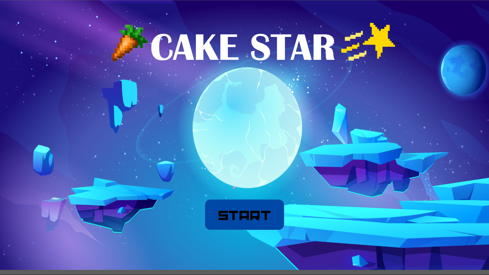 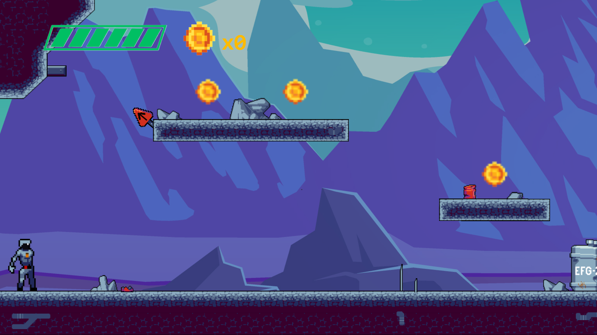Jogo desenvolvido no Construct 3, com a finalidade de você ajudar um artronauta sair da Lua para voltar para a Terra para comer o seu bolo favorito feito pela sua amada mãe.
Jogar o jogo →🌱 Plantinha Pomposa
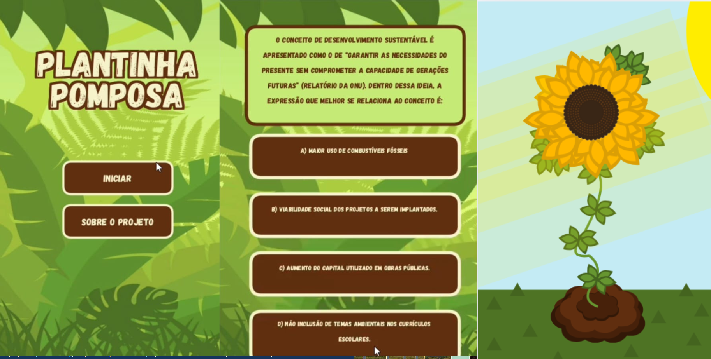Quiz interativo com a finalidade de tornar o estudo de questões ambientais de vestibulares mais divertido e lúdico. A Plantinha Pomposa irá crescer na medida dos acertos. Desenvolvido em Processing.
Ver em repositório GitHub →📰 Jornal Pomposo
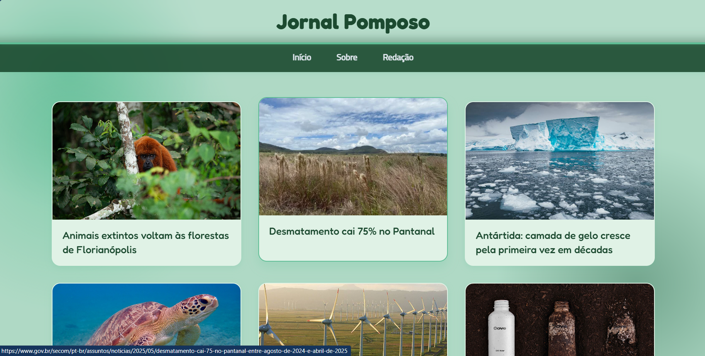 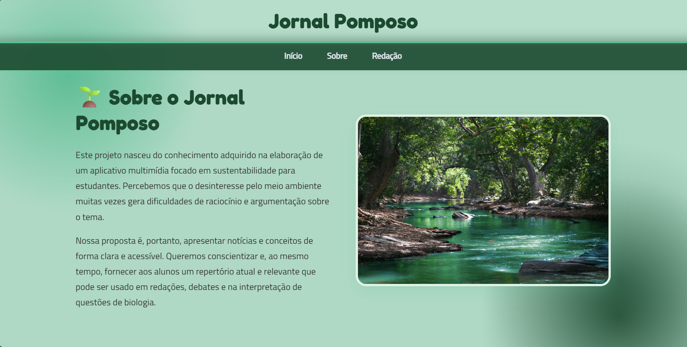 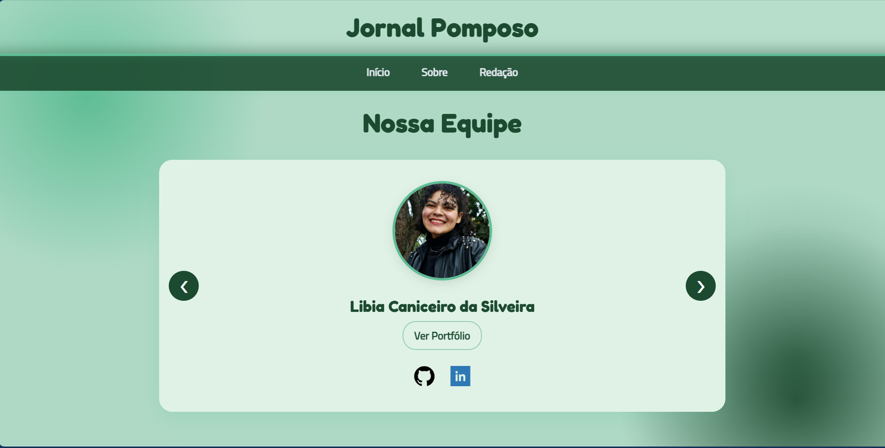Site de notícias animadoras sobre o meio ambiente. Desenvolvido com HTML, CSS e JavaScript.
Ver o Jornal Pomposo →🖼️ Portfólio Digital
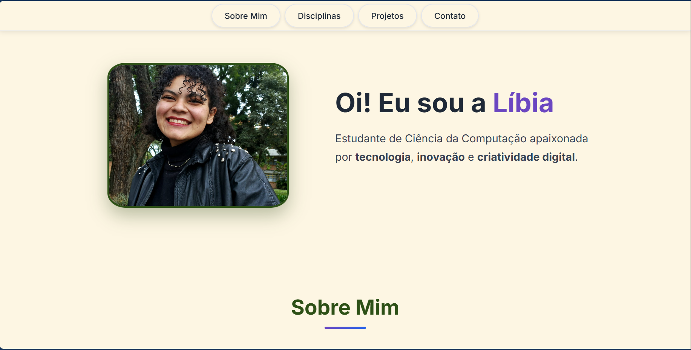 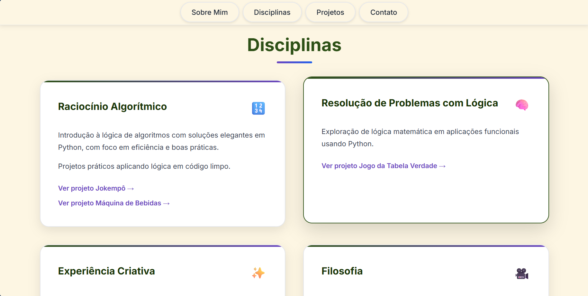Este próprio site como parte de um projeto prático na disciplina de Experiência Criativa.
🎥 Entrevista sobre IAs
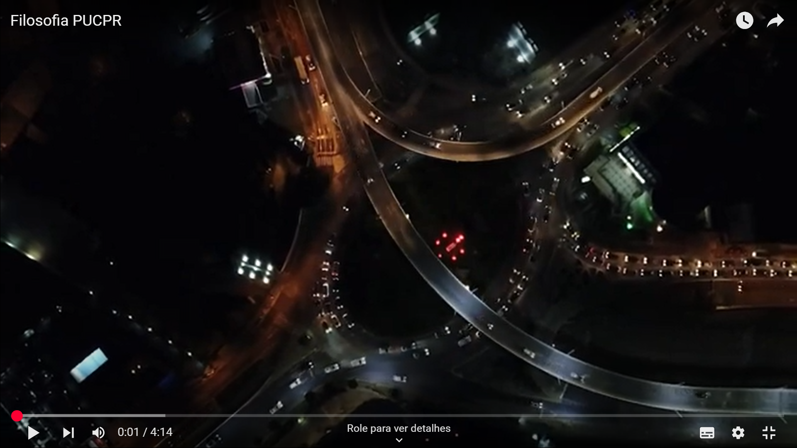 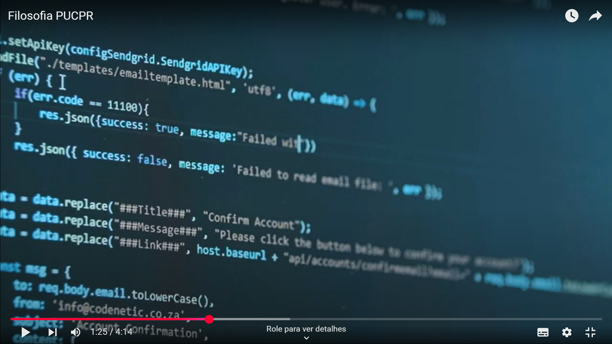Vídeo no YouTube com uma entrevista com o profissional Paulo Schwertner sobre os impactos da Inteligência Artificial no futuro da computação.
Ver vídeo no YouTube →🌡️ Estação Meteorológica IoT

Projeto em ESP32 com sensores DHT11, LDR e de chuva, além de LEDs, buzzer e display para monitoramento climático.
Ver a Estação em repositório GitHub →🎥 Seminário sobre Chrome OS
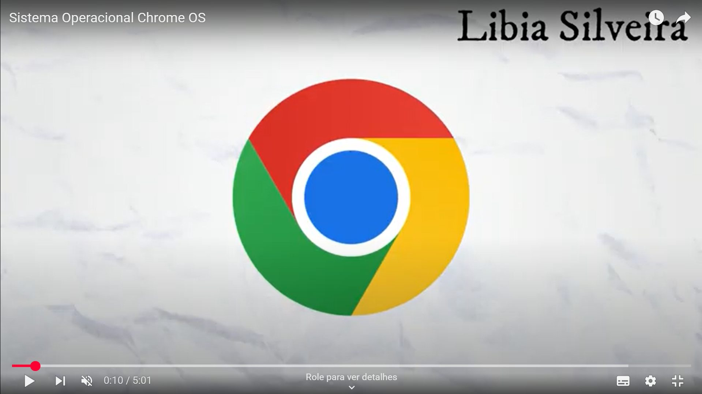 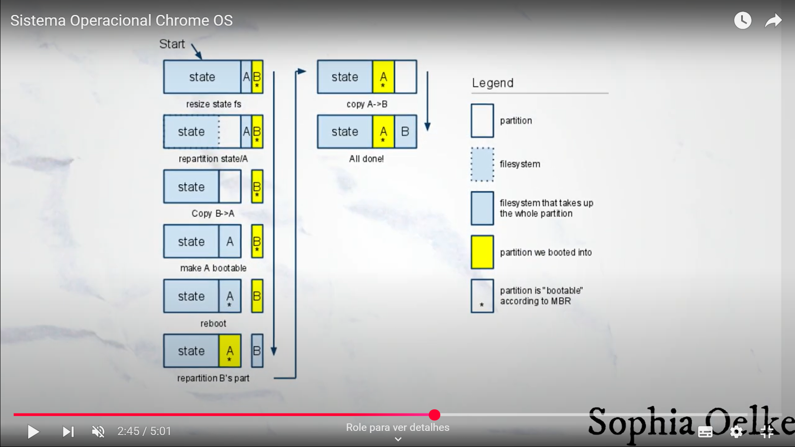 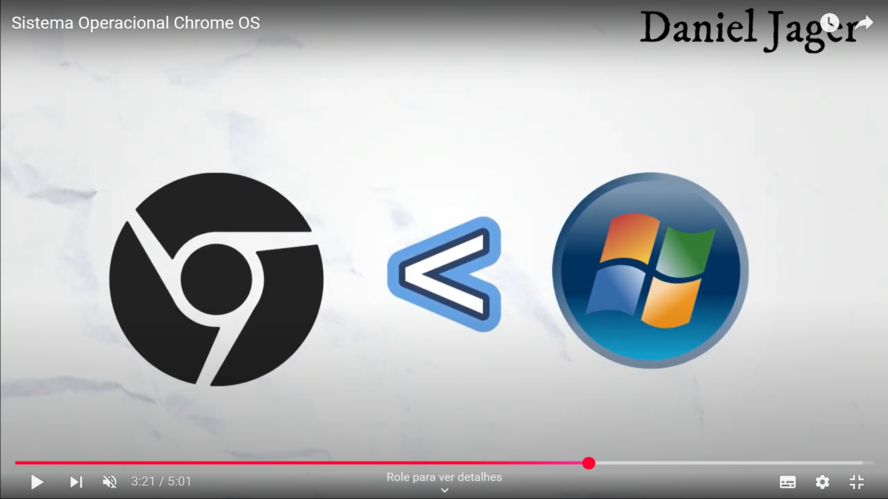Vídeo no YouTube informativo sobre o Chrome OS, o sistema operacional da empresa Google.
Ver vídeo no YouTube →